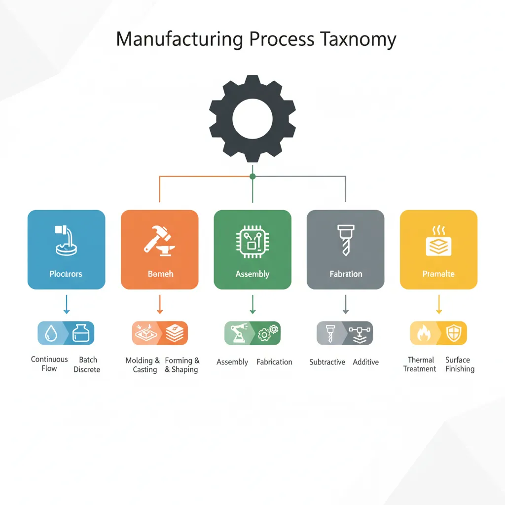
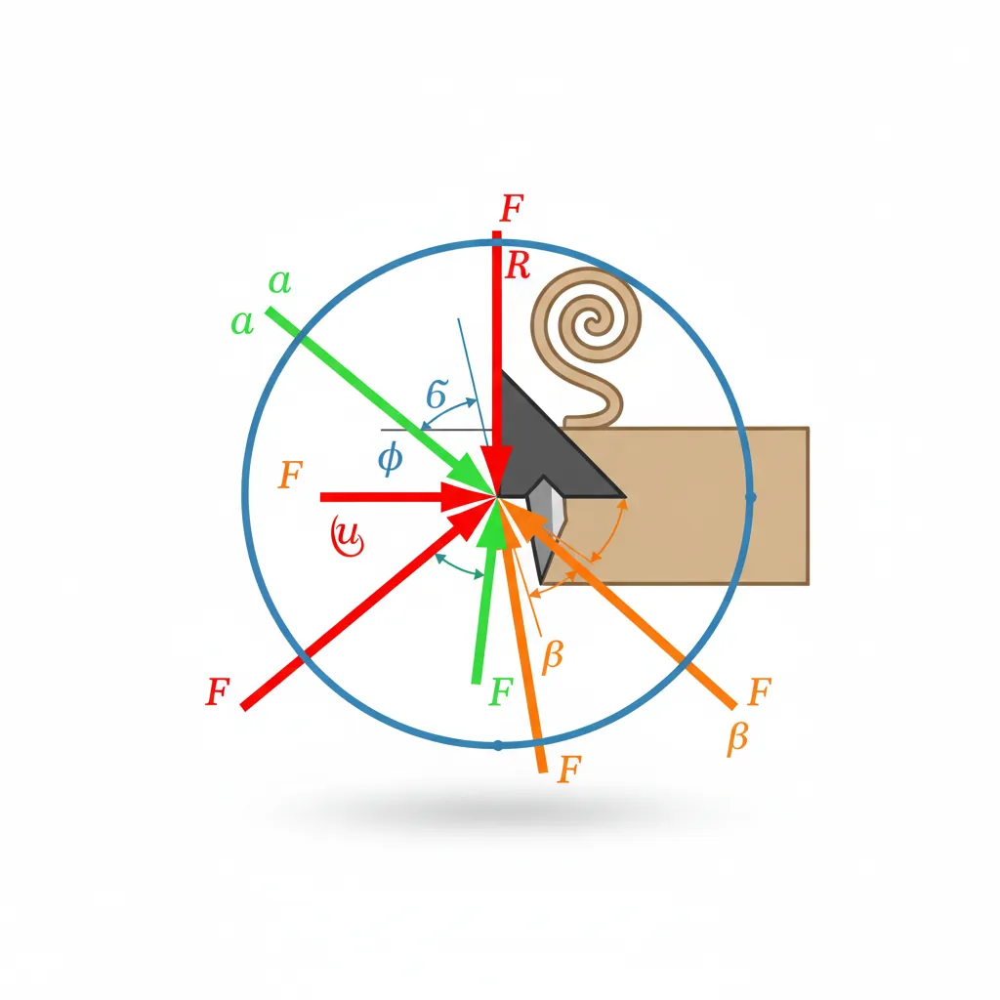
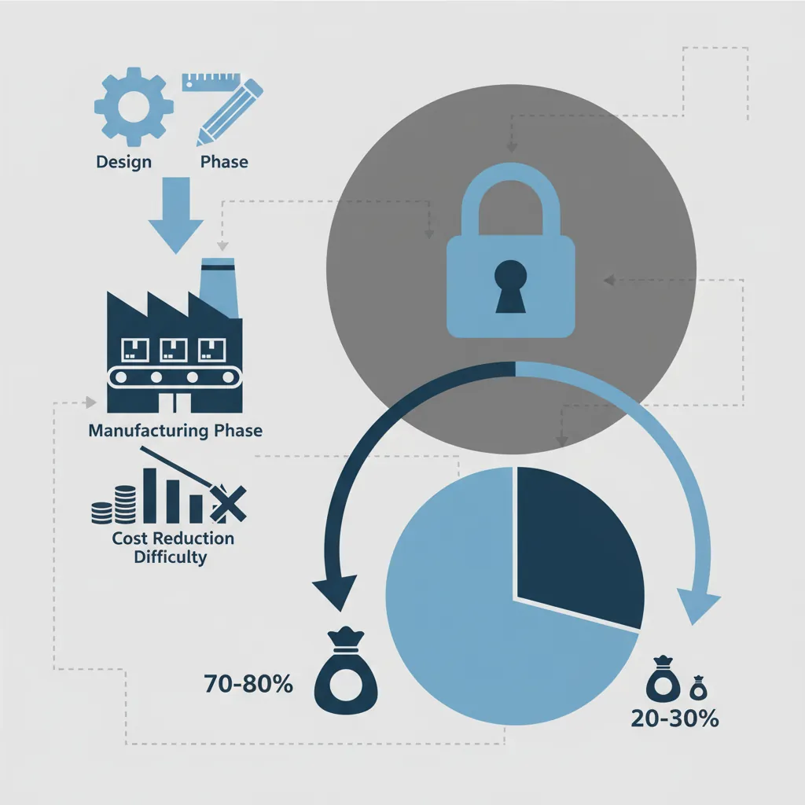
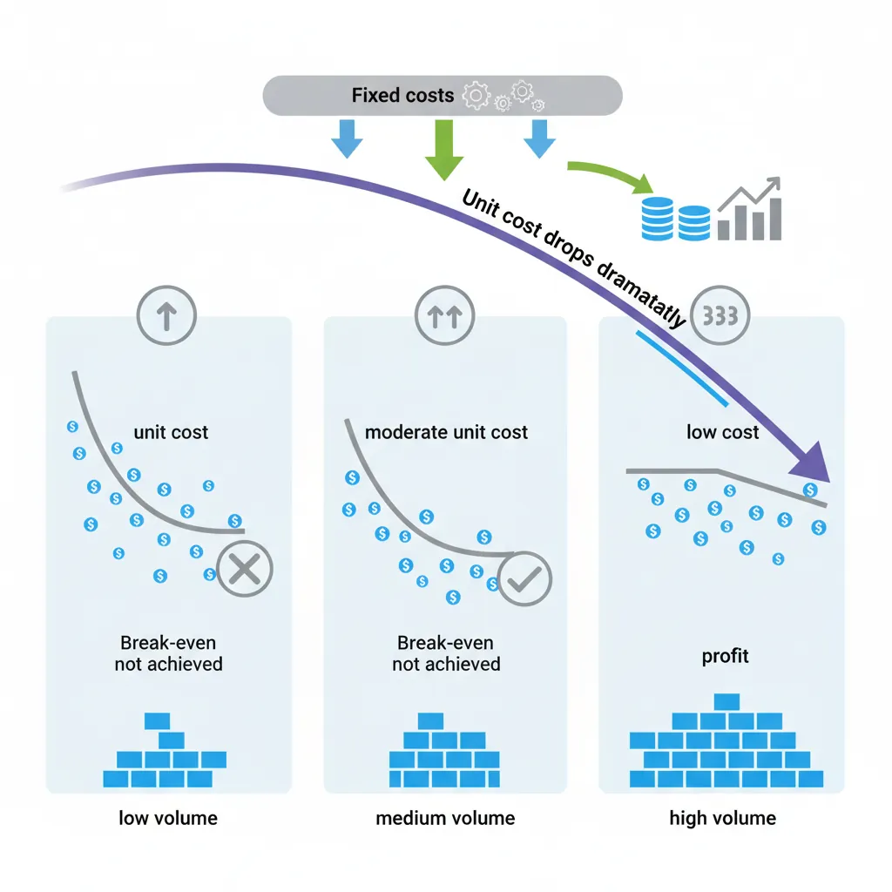

Manufacturing Process Taxonomy
graph TD
MFG["Manufacturing\nProcesses"] --> CAST["Casting &\nMolding"]
MFG --> FORM["Forming &\nForging"]
MFG --> MACH["Machining &\nMaterial Removal"]
MFG --> JOIN["Joining &\nAssembly"]
MFG --> ADD["Additive\nManufacturing"]
CAST --> SAND["Sand Casting"]
CAST --> INJ["Injection Molding"]
FORM --> STAMP["Stamping"]
FORM --> EXTR["Extrusion"]
MACH --> TURN["Turning"]
MACH --> MILL["Milling"]
JOIN --> WELD["Welding"]
JOIN --> BRAZ["Brazing"]
ADD --> FDM["FDM / FFF"]
ADD --> SLS["SLS / SLM"]
Manufacturing Mastery
Manufacturing Systems & Process Foundations
Process taxonomy, physics, DFM/DFA, production economics, Theory of ConstraintsCasting, Forging & Metal Forming
Sand/investment/die casting, open/closed-die forging, rolling, extrusion, deep drawingMachining & CNC Technology
Cutting mechanics, tool materials, GD&T, multi-axis machining, high-speed machining, CAMWelding, Joining & Assembly
Arc/MIG/TIG/laser/friction stir welding, brazing, adhesive bonding, weld metallurgyAdditive Manufacturing & Hybrid Processes
PBF, DED, binder jetting, topology optimization, in-situ monitoringQuality Control, Metrology & Inspection
SPC, control charts, CMM, NDT, surface metrology, reliabilityLean Manufacturing & Operational Excellence
5S, Kaizen, VSM, JIT, Kanban, Six Sigma, OEEManufacturing Automation & Robotics
Industrial robotics, PLC, sensors, cobots, vision systems, safetyIndustry 4.0 & Smart Factories
CPS, IIoT, digital twins, predictive maintenance, MES, cloud manufacturingManufacturing Economics & Strategy
Cost modeling, capital investment, facility layout, global supply chainsSustainability & Green Manufacturing
LCA, circular economy, energy efficiency, carbon footprint reductionAdvanced & Frontier Manufacturing
Nano-manufacturing, semiconductor fabrication, bio-manufacturing, autonomous systemsEvery manufactured product — from a smartphone to a jet engine — begins as raw material that must be transformed into a finished shape. Manufacturing processes can be classified into a taxonomy based on how they change the material's geometry, properties, or state. Understanding this taxonomy is the first step toward selecting the right process for any application.

The four primary process families are:
| Process Family | Mechanism | Examples | Typical Tolerances |
|---|---|---|---|
| Subtractive | Material removed from a larger workpiece | Turning, milling, drilling, grinding, EDM | ±0.01 – ±0.1 mm |
| Formative | Material reshaped without addition or removal | Casting, forging, rolling, extrusion, stamping | ±0.1 – ±1.0 mm |
| Additive | Material built up layer by layer | SLA, SLS, FDM, DMLS, binder jetting | ±0.05 – ±0.5 mm |
| Joining | Two or more parts permanently united | Welding, brazing, soldering, adhesive bonding | Varies by method |
Beyond these four, surface engineering (coating, heat treatment, shot peening) and hybrid processes (combining additive + subtractive in a single machine) form additional categories that are increasingly important in modern manufacturing.
Case Study: iPhone Manufacturing Process Chain
Apple's iPhone uses nearly every process family in its production:
- Formative: The aluminum chassis starts as a billet that is forged and extruded into an ingot shape
- Subtractive: CNC milling machines carve the unibody from the aluminum block — removing ~80% of material
- Additive: 3D printing is used for rapid prototyping of internal structural elements
- Joining: Laser welding bonds the stainless steel frame to internal brackets
- Surface Engineering: Anodizing creates the colored oxide layer; PVD coating adds wear resistance
Key Insight: A single consumer product may require 200+ distinct manufacturing steps across 4+ process families, supplied by dozens of factories across multiple countries.
Job Shop, Batch, Mass & Continuous Production
Manufacturing systems are organized by production volume and product variety. The choice of production system affects everything from equipment selection to workforce skills to cost per unit.
| System Type | Volume | Variety | Layout | Examples |
|---|---|---|---|---|
| Job Shop | 1 – 100 units | Very high (custom) | Process layout (grouped by function) | Tool & die shops, custom machinery, prototyping labs |
| Batch Production | 100 – 10,000 units | Medium (families) | Cellular layout (group technology) | Pharmaceutical manufacturing, bakeries, seasonal goods |
| Mass Production | 10,000 – 1,000,000+ | Low (few variants) | Product layout (assembly line) | Automobile assembly, consumer electronics, appliances |
| Continuous Process | Unlimited (24/7 flow) | Very low (1 product) | Fixed flow path | Oil refining, steel mills, paper mills, chemical plants |
Group Technology (GT) bridges the gap between job shop and flow production. By classifying parts into families with similar geometry or processing requirements, GT enables cellular manufacturing — where a dedicated cell of machines handles an entire part family, reducing setup times by 50-80%.
Process Planning & Routing
Process planning is the bridge between design and manufacturing. It answers the question: "Given this part design, what sequence of operations, machines, tools, and parameters will produce it correctly and economically?"
A process route sheet (also called an operation sheet) specifies:
- Operation sequence: The order of manufacturing steps (e.g., rough turn → heat treat → finish grind)
- Machine selection: Which machine performs each operation
- Tooling: Cutting tools, fixtures, jigs, and gauges required
- Process parameters: Speeds, feeds, temperatures, pressures
- Time standards: Setup time and cycle time per operation
- Quality checkpoints: In-process inspection requirements
Exercise: Process Route for a Steel Shaft
Consider a hardened steel shaft (Ø50mm × 200mm, surface hardness 58 HRC, surface finish Ra 0.4 μm). A typical process route would be:
- Op 10 — Saw Cut: Cut bar stock to 210mm (10mm allowance) on a band saw
- Op 20 — Rough Turn: CNC lathe, leave 1mm stock on all diameters
- Op 30 — Heat Treatment: Carburize and quench to 58 HRC
- Op 40 — Cylindrical Grind: Grind to final dimension ±0.01mm, Ra 0.4 μm
- Op 50 — Inspect: CMM measurement, surface roughness verification
Why this order? We rough turn before hardening because hard steel is difficult to machine. We grind after hardening to achieve final dimensions and surface finish.
import numpy as np
# Process Planning: Calculate total manufacturing lead time
# for a multi-operation process route
# Define operations: (name, setup_time_min, cycle_time_min, batch_size)
operations = [
("Saw Cut", 15, 2, 100),
("Rough Turn", 30, 5, 100),
("Heat Treatment", 60, 0.5, 100), # batch process
("Cylindrical Grind", 45, 8, 100),
("Inspect", 10, 3, 100),
]
print("Process Route Sheet - Steel Shaft")
print("=" * 65)
print(f"{'Operation':<20} {'Setup (min)':<12} {'Cycle (min)':<12} {'Total (min)':<12}")
print("-" * 65)
total_time = 0
for name, setup, cycle, batch in operations:
op_total = setup + (cycle * batch)
total_time += op_total
print(f"{name:<20} {setup:<12} {cycle:<12} {op_total:<12.0f}")
print("-" * 65)
print(f"{'Total Lead Time':<20} {'':<12} {'':<12} {total_time:<12.0f} min")
print(f"{'Per-Part Time':<20} {'':<12} {'':<12} {total_time/100:<12.1f} min")
print(f"{'Throughput':<20} {'':<12} {'':<12} {60/(total_time/100):<12.1f} parts/hr")
Process Physics & Mechanics
Behind every manufacturing process lies fundamental physics — forces, temperatures, material behavior, and energy transformations. Understanding these principles enables engineers to predict process outcomes, optimize parameters, and troubleshoot problems systematically rather than through trial-and-error.

In material removal processes (machining), a harder tool penetrates a softer workpiece, shearing material along a shear plane. The fundamental model is orthogonal cutting — a simplification where the cutting edge is perpendicular to the cutting velocity.
The Merchant's Circle force diagram relates the key forces in orthogonal cutting:
- Fc (Cutting force): Acts in the direction of cutting velocity — this is the primary force that does work
- Ft (Thrust force): Acts perpendicular to the cutting velocity — pushes the tool away from the workpiece
- Fs (Shear force): Acts along the shear plane — the force required to shear the material
- Ff (Friction force): Acts along the tool rake face — resists chip flow
import numpy as np
# Merchant's Circle: Calculate cutting forces in orthogonal cutting
# Given: shear angle (phi), rake angle (alpha), friction angle (beta)
# Parameters
phi_deg = 25 # Shear angle (degrees)
alpha_deg = 10 # Rake angle (degrees)
beta_deg = 35 # Friction angle (degrees)
t1 = 0.25 # Uncut chip thickness (mm)
w = 3.0 # Width of cut (mm)
tau_s = 400 # Shear strength of workpiece (MPa)
# Convert to radians
phi = np.radians(phi_deg)
alpha = np.radians(alpha_deg)
beta = np.radians(beta_deg)
# Shear force
A_s = (t1 * w) / np.sin(phi) # Shear plane area (mm^2)
F_s = tau_s * A_s # Shear force (N)
# Cutting force (Merchant's analysis)
F_c = F_s * np.cos(beta - alpha) / (np.sin(phi) * np.cos(phi + beta - alpha))
# Thrust force
F_t = F_s * np.sin(beta - alpha) / (np.sin(phi) * np.cos(phi + beta - alpha))
# Cutting power
V_c = 200 # Cutting speed (m/min)
P_c = (F_c * V_c) / (60 * 1000) # Power in kW
# Chip thickness ratio
r = np.sin(phi) / np.cos(phi - alpha)
t2 = t1 / r # Chip thickness (mm)
print("Merchant's Circle Analysis - Orthogonal Cutting")
print("=" * 50)
print(f"Shear plane area: {A_s:.2f} mm²")
print(f"Shear force (Fs): {F_s:.1f} N")
print(f"Cutting force (Fc): {F_c:.1f} N")
print(f"Thrust force (Ft): {F_t:.1f} N")
print(f"Resultant force: {np.sqrt(F_c**2 + F_t**2):.1f} N")
print(f"Cutting power: {P_c:.2f} kW")
print(f"Chip thickness: {t2:.3f} mm (ratio r = {r:.3f})")
print(f"Specific energy: {F_c / (t1 * w):.1f} N/mm² = {F_c / (t1 * w) / 1000:.2f} GPa")
Plastic Deformation Mechanics
In formative processes (forging, rolling, extrusion), material is reshaped through plastic deformation — permanent shape change that occurs when stress exceeds the material's yield strength. The physics of plastic deformation governs how metals flow, harden, and sometimes fracture during forming.
Key concepts in plastic deformation:
- True Stress–True Strain: Unlike engineering stress (σ = F/A₀), true stress (σ_t = F/A) accounts for the changing cross-section. The flow stress equation σ = Kεn describes how stress increases with strain, where K is the strength coefficient and n is the strain-hardening exponent.
- Von Mises Yield Criterion: Material yields when the equivalent stress σ_eq = √[(σ₁-σ₂)² + (σ₂-σ₃)² + (σ₃-σ₁)²] / √2 reaches the yield stress. This is critical for multi-axial stress states in forming.
- Hot vs Cold Working: Cold working (below recrystallization temperature) increases strength through work hardening. Hot working (above recrystallization) allows unlimited deformation without hardening but produces looser tolerances.
import numpy as np
# Flow Stress and Forming Force Calculation
# Using the power law: sigma = K * epsilon^n
# Material properties (AISI 1020 steel, cold working)
K = 530 # Strength coefficient (MPa)
n = 0.26 # Strain-hardening exponent
sigma_y = 350 # Initial yield strength (MPa)
# Calculate true stress at various strains
strains = np.array([0.05, 0.10, 0.20, 0.30, 0.50, 0.80, 1.0])
print("Flow Stress Curve - AISI 1020 Steel (Cold Working)")
print("=" * 50)
print(f"{'True Strain':<15} {'Flow Stress (MPa)':<20} {'Hardness (HV)':<15}")
print("-" * 50)
for eps in strains:
sigma = K * eps**n
# Approximate Vickers hardness (HV ≈ sigma / 3)
hv = sigma / 3
print(f"{eps:<15.2f} {sigma:<20.1f} {hv:<15.0f}")
# Forging force calculation: Simple upsetting of a cylinder
D0 = 50 # Initial diameter (mm)
h0 = 100 # Initial height (mm)
h1 = 60 # Final height (mm)
# True strain in compression
epsilon = np.log(h0 / h1)
# Average flow stress
sigma_avg = K * epsilon**n
# Contact area at final height (volume conservation)
V = np.pi/4 * D0**2 * h0
A1 = V / h1
D1 = np.sqrt(4 * A1 / np.pi)
# Forging force (with friction coefficient mu = 0.1)
mu = 0.1
F_forge = sigma_avg * A1 * (1 + (2 * mu * D1) / (3 * h1))
print(f"\nUpsetting Force Calculation:")
print(f"True strain: {epsilon:.3f}")
print(f"Flow stress: {sigma_avg:.1f} MPa")
print(f"Final diameter: {D1:.1f} mm")
print(f"Contact area: {A1:.0f} mm²")
print(f"Forging force: {F_forge:.0f} N = {F_forge/1000:.1f} kN")
Heat Transfer & Surface Integrity
Nearly all manufacturing processes generate heat. In machining, 60-90% of cutting energy converts to heat. In welding, concentrated energy melts metal. In casting, the rate of heat extraction from liquid metal determines grain structure. Surface integrity — the condition of a surface after processing — directly affects component performance and fatigue life.
| Process | Peak Temperature | Surface Effects | Impact on Fatigue Life |
|---|---|---|---|
| Grinding | 800–1200°C (localized) | Thermal damage ("burn"), tensile residual stress, white layer | Can reduce by 30-50% |
| Turning | 400–800°C at tool tip | Compressive residual stress (favorable), work-hardened layer | Neutral to +10% |
| Shot Peening | Ambient (mechanical) | Deep compressive residual stress, increased hardness | Improves by 20-50% |
| EDM | 8,000–12,000°C (spark) | Recast layer, micro-cracks, tensile stress | Can reduce by 40-60% |
Design for Manufacturing & Assembly
Design for Manufacturing (DFM) and Design for Assembly (DFA) are systematic methodologies that ensure a product can be manufactured and assembled efficiently, at low cost, and with high quality. Studies show that 70-80% of a product's manufacturing cost is determined at the design stage — making DFM/DFA the highest-leverage activity in product development.

Core DFM principles include:
Minimize Part Count
Every part that can be eliminated removes a material cost, a manufacturing operation, an assembly step, a potential failure point, and an inventory item. Ask: "Does this part move relative to its neighbor? Is it a different material? Must it be separate for service?"
Design for the Process
Each manufacturing process has constraints. Design walls, ribs, and bosses for the capabilities of injection molding. Design draft angles for casting. Avoid undercuts that require side cores. Design radii that match standard cutter sizes.
Minimize Tight Tolerances
Tighter tolerances require more expensive processes. A ±0.5mm tolerance can be achieved by casting; ±0.05mm requires machining; ±0.005mm requires grinding. Specify only the tolerance the function demands.
Use Standard Components
Standard screws, bearings, O-rings, and connectors are cheaper, more available, and better characterized than custom parts. Design around standard sizes wherever possible.
Case Study: Bosch Power Tool Redesign
Bosch applied DFA to a cordless drill, achieving remarkable improvements:
- Before: 120 parts, 85 assembly operations, 7 different fastener types
- After: 65 parts (46% reduction), 42 operations (51% reduction), 3 fastener types
- Key changes: Snap-fit housing eliminated 12 screws. Motor-gearbox subassembly integrated 8 parts into 3. Self-aligning features eliminated 4 jigs.
- Results: 35% cost reduction, 40% faster assembly, 60% fewer warranty claims
Lesson: DFA's greatest value is not just cost reduction — it's quality improvement through simplification. Fewer parts means fewer things that can go wrong.
DFA & Boothroyd-Dewhurst Method
The Boothroyd-Dewhurst DFA method is the most widely used systematic approach to DFA. It evaluates each part with three questions to determine if it can be eliminated or combined with adjacent parts:
- Does the part move relative to all other parts already assembled? (If yes, it must remain separate)
- Must the part be of a different material or be isolated from other parts? (If yes, it must remain separate)
- Must the part be separate for assembly or disassembly? (If yes, it must remain separate)
If the answer to all three questions is "no," the part is a candidate for elimination or integration. The DFA efficiency index is calculated as:
Where Nmin = theoretical minimum number of parts, ta = ideal assembly time per part (~3 seconds), ttotal = actual total assembly time. A DFA efficiency above 60% indicates a well-designed product. Most initial designs score 10-30%.
Process Capability & Variation (Cp, Cpk)
Process capability measures how well a manufacturing process can produce parts within specification limits. It answers the fundamental question: "Can this process consistently make parts that meet the design requirements?"
The two key indices are:
- Cp (Process Capability): Cp = (USL - LSL) / (6σ). Measures the potential capability if the process is perfectly centered. Cp ≥ 1.33 is the minimum for most industries; aerospace requires Cp ≥ 1.67.
- Cpk (Process Capability Index): Cpk = min[(USL - μ) / (3σ), (μ - LSL) / (3σ)]. Measures actual capability accounting for process centering. A process can have high Cp but low Cpk if it's off-center.
import numpy as np
# Process Capability Analysis
# Simulating a CNC turning operation producing shaft diameters
# Specification: 25.00 ± 0.05 mm
target = 25.00
USL = 25.05 # Upper specification limit
LSL = 24.95 # Lower specification limit
# Simulate 200 measurements from a production run
np.random.seed(42)
measurements = np.random.normal(loc=25.01, scale=0.012, size=200)
# Calculate statistics
mean = np.mean(measurements)
std = np.std(measurements, ddof=1) # Sample std deviation
# Process Capability Indices
Cp = (USL - LSL) / (6 * std)
Cpk = min((USL - mean) / (3 * std), (mean - LSL) / (3 * std))
# Parts out of specification
out_of_spec = np.sum((measurements > USL) | (measurements < LSL))
ppm_defective = (out_of_spec / len(measurements)) * 1_000_000
print("Process Capability Analysis - CNC Shaft Turning")
print("=" * 55)
print(f"Specification: {target:.2f} ± 0.05 mm [{LSL} – {USL}]")
print(f"Sample size: {len(measurements)}")
print(f"Mean: {mean:.4f} mm")
print(f"Std deviation: {std:.4f} mm")
print(f"Cp: {Cp:.3f} {'✓ Capable' if Cp >= 1.33 else '✗ Not capable'}")
print(f"Cpk: {Cpk:.3f} {'✓ Capable' if Cpk >= 1.33 else '✗ Not capable'}")
print(f"Parts out of spec: {out_of_spec}/{len(measurements)}")
print(f"PPM defective: {ppm_defective:.0f}")
print(f"\nInterpretation:")
if Cpk >= 1.67:
print(" Excellent capability (Six Sigma level)")
elif Cpk >= 1.33:
print(" Adequate capability for most applications")
elif Cpk >= 1.0:
print(" Marginal - process improvement needed")
else:
print(" Inadequate - significant scrap/rework expected")
Production Economics & Systems
Every manufacturing decision — which process to use, whether to automate, how many machines to buy — ultimately comes down to economics. Production economics provides the framework for making these decisions rationally, considering fixed costs, variable costs, volume, learning curves, and the time value of money.

The total manufacturing cost per unit is:
Where N = production volume. Note that material and labor costs are per-unit (variable), while tooling and capital costs are spread across all units (fixed). This is why unit cost drops dramatically with volume.
Case Study: Injection Molding vs CNC Machining Break-Even
A company needs plastic housings. Two options:
- CNC Machining: No tooling cost, $15/unit variable cost
- Injection Molding: $80,000 mold cost, $0.50/unit variable cost
Break-even: $80,000 / ($15.00 - $0.50) = 5,517 units
Below 5,517 units → CNC is cheaper. Above 5,517 units → injection molding wins decisively. At 100,000 units, injection molding costs $0.50 + $0.80 = $1.30/unit vs $15.00 for CNC — a 91% savings.
import numpy as np
# Break-Even Analysis: CNC Machining vs Injection Molding
# Determine the production volume where injection molding becomes cheaper
# CNC Machining costs
cnc_fixed = 0 # No tooling cost
cnc_variable = 15.00 # Per-unit cost
# Injection Molding costs
mold_fixed = 80000 # Mold tooling cost
mold_variable = 0.50 # Per-unit cost
# Break-even volume
breakeven = mold_fixed / (cnc_variable - mold_variable)
print(f"Break-even volume: {breakeven:.0f} units")
# Cost comparison at various volumes
volumes = [100, 500, 1000, 5000, 5517, 10000, 50000, 100000]
print(f"\n{'Volume':<10} {'CNC Cost':<15} {'Mold Cost':<15} {'Cheaper':<10} {'Savings':<10}")
print("-" * 60)
for v in volumes:
cnc = cnc_fixed + cnc_variable * v
mold = mold_fixed + mold_variable * v
cheaper = "CNC" if cnc < mold else "Mold"
savings = abs(cnc - mold)
print(f"{v:<10} ${cnc:<14,.0f} ${mold:<14,.0f} {cheaper:<10} ${savings:<10,.0f}")
Capacity Planning & Throughput
Capacity planning determines how much production capability a facility needs and when it's needed. The fundamental metric is throughput — the rate at which finished goods are produced, typically measured in units per hour, per shift, or per year.
Key capacity metrics:
- Theoretical capacity: Maximum output if everything runs perfectly (24/7, zero downtime, zero scrap)
- Effective capacity: Theoretical capacity × planned utilization (accounting for maintenance, breaks, changeovers)
- Actual output: Effective capacity × efficiency (accounting for unplanned downtime, quality losses)
- Utilization = Actual output / Theoretical capacity — typically 70-85% in well-run factories
- Takt time = Available time / Customer demand — the drumbeat of production. If you need 480 parts per 8-hour shift, takt time = 480 min / 480 parts = 1 min/part
import numpy as np
# Capacity Planning & Takt Time Calculation
# Factory parameters
shifts_per_day = 2
hours_per_shift = 8
days_per_week = 5
weeks_per_year = 50
# Available time
minutes_per_shift = hours_per_shift * 60
planned_breaks = 30 # minutes per shift
planned_maintenance = 30 # minutes per shift
available_time = minutes_per_shift - planned_breaks - planned_maintenance
# Customer demand
annual_demand = 120000 # units per year
weekly_demand = annual_demand / weeks_per_year
daily_demand = weekly_demand / days_per_week
# Takt time
total_daily_available = available_time * shifts_per_day
takt_time = total_daily_available / daily_demand
print("Capacity Planning Analysis")
print("=" * 50)
print(f"Annual demand: {annual_demand:,.0f} units")
print(f"Weekly demand: {weekly_demand:.0f} units")
print(f"Daily demand: {daily_demand:.0f} units")
print(f"Available time/shift:{available_time} min")
print(f"Available time/day: {total_daily_available} min")
print(f"Takt time: {takt_time:.2f} min/part ({takt_time*60:.1f} sec)")
print(f"\nIf cycle time > {takt_time:.2f} min, you need parallel machines")
# Number of machines needed
cycle_time = 3.5 # minutes per part on one machine
machines_needed = np.ceil(cycle_time / takt_time)
actual_capacity = total_daily_available * machines_needed / cycle_time
print(f"\nCycle time per part: {cycle_time} min")
print(f"Machines needed: {machines_needed:.0f}")
print(f"Actual daily capacity:{actual_capacity:.0f} parts")
print(f"Capacity utilization: {(daily_demand / actual_capacity) * 100:.1f}%")
Theory of Constraints & Bottleneck Analysis
The Theory of Constraints (TOC), developed by Eliyahu Goldratt in his book The Goal (1984), is one of the most powerful frameworks in manufacturing management. Its core insight: every system has at least one constraint (bottleneck), and the system's throughput is limited by that bottleneck.
flowchart TD
S1["1. IDENTIFY
the constraint
(bottleneck)"]
S2["2. EXPLOIT
Maximize throughput
of the constraint"]
S3["3. SUBORDINATE
Align all other processes
to support the constraint"]
S4["4. ELEVATE
Invest to increase
constraint capacity"]
S5["5. REPEAT
Find the new
constraint"]
S1 --> S2 --> S3 --> S4 --> S5
S5 -->|"New bottleneck?"| S1
style S1 fill:#BF092F,stroke:#132440,color:#fff
style S2 fill:#16476A,stroke:#132440,color:#fff
style S3 fill:#3B9797,stroke:#132440,color:#fff
style S4 fill:#16476A,stroke:#132440,color:#fff
style S5 fill:#132440,stroke:#132440,color:#fff
TOC's Five Focusing Steps:
- IDENTIFY the constraint (bottleneck) — the resource with the longest cycle time or largest queue
- EXPLOIT the constraint — maximize its uptime, reduce setup time, eliminate idle time at the bottleneck
- SUBORDINATE everything else — non-bottleneck operations should pace themselves to the bottleneck, not overproduce
- ELEVATE the constraint — add capacity at the bottleneck (overtime, additional equipment, outsourcing)
- REPEAT — once the bottleneck moves, go back to step 1
import numpy as np
# Theory of Constraints: Identify the Bottleneck
# Simulate a 5-station production line
stations = {
"Cutting": {"cycle_time": 4.0, "setup_per_batch": 15, "batch_size": 50},
"Milling": {"cycle_time": 8.5, "setup_per_batch": 25, "batch_size": 50},
"Drilling": {"cycle_time": 3.0, "setup_per_batch": 10, "batch_size": 50},
"Heat Treat": {"cycle_time": 2.0, "setup_per_batch": 60, "batch_size": 50},
"Grinding": {"cycle_time": 6.0, "setup_per_batch": 20, "batch_size": 50},
}
available_minutes = 450 # per shift (480 - 30 min breaks)
print("Theory of Constraints - Bottleneck Analysis")
print("=" * 70)
print(f"{'Station':<15} {'Cycle(min)':<12} {'Setup(min)':<12} {'Capacity':<12} {'Util %':<10}")
print("-" * 70)
capacities = {}
for name, data in stations.items():
# Effective time after setup
effective_time = available_minutes - data["setup_per_batch"]
capacity = effective_time / data["cycle_time"]
capacities[name] = capacity
utilization = (data["cycle_time"] / min(capacities.values()) * 100) if capacities else 0
print(f"{name:<15} {data['cycle_time']:<12} {data['setup_per_batch']:<12} {capacity:<12.0f} ", end="")
# Recalculate with bottleneck identified
bottleneck = min(capacities, key=capacities.get)
bn_capacity = capacities[bottleneck]
print(f"\n\n{'='*70}")
print(f"BOTTLENECK: {bottleneck} (capacity = {bn_capacity:.0f} parts/shift)")
print(f"System throughput limited to: {bn_capacity:.0f} parts/shift")
print(f"\nImprovement priorities:")
for name, cap in sorted(capacities.items(), key=lambda x: x[1]):
excess = cap - bn_capacity
status = "◄ BOTTLENECK" if name == bottleneck else f"+{excess:.0f} excess capacity"
print(f" {name:<15} {cap:>6.0f} parts/shift {status}")
Case Study: Toyota Production System & TOC
Toyota's legendary production system embodies TOC principles even though it was developed independently:
- Pull system (Kanban): Downstream operations "pull" work from upstream — preventing overproduction at non-bottleneck stations
- Andon cord: Any worker can stop the entire line when a quality issue is detected — prioritizing flow over utilization
- Heijunka (leveling): Production is leveled to match demand rate, preventing bottleneck overload
- Result: Toyota produces a vehicle every 60 seconds with <1% defect rate, while maintaining 99%+ on-time delivery
Key Insight: TOC and Lean are complementary. TOC tells you where to focus. Lean tells you how to improve. Together, they form the most powerful improvement methodology in manufacturing.